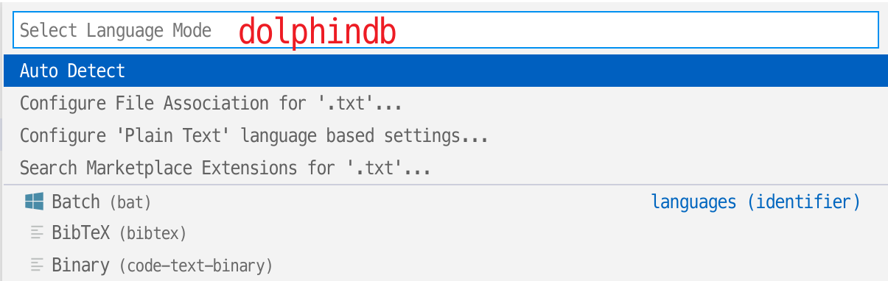
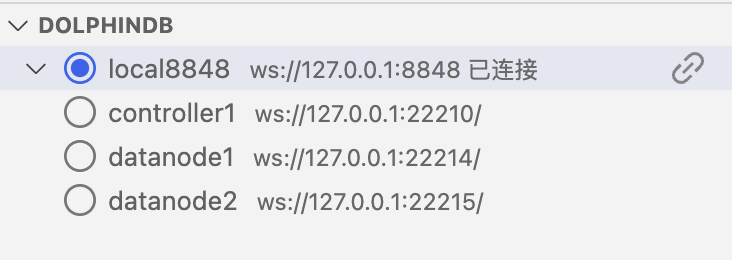
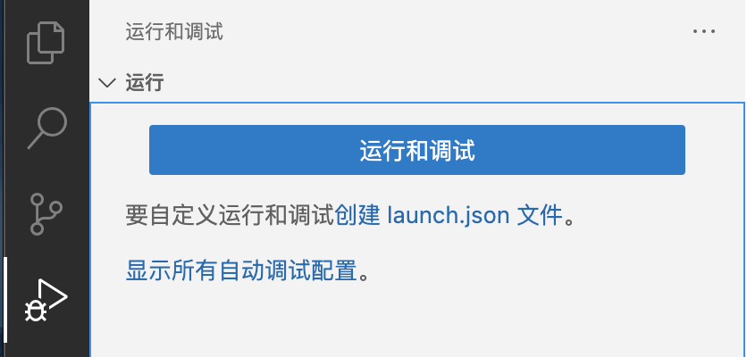
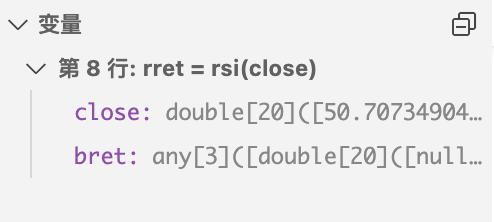
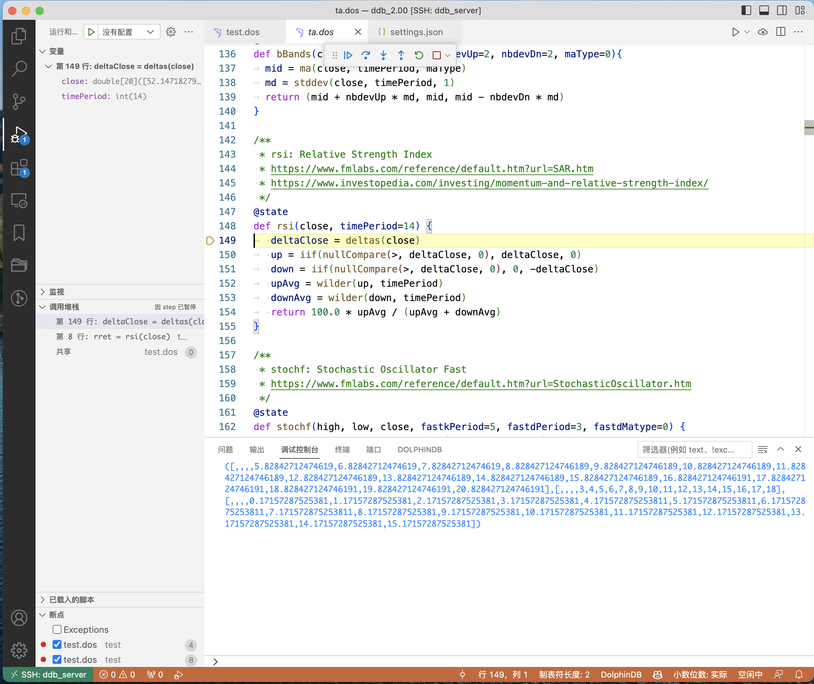
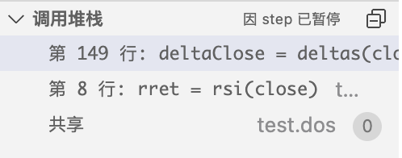
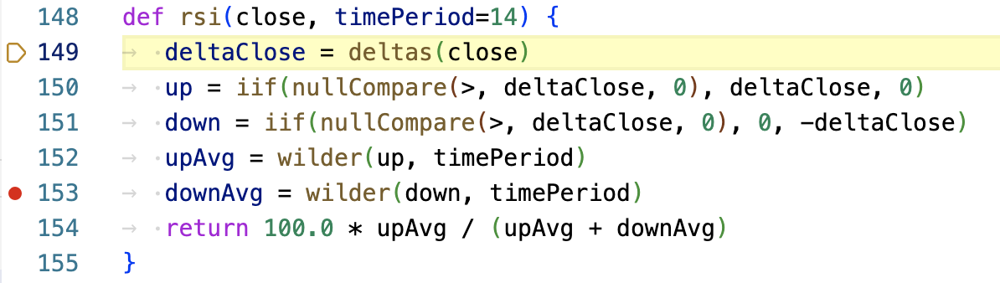
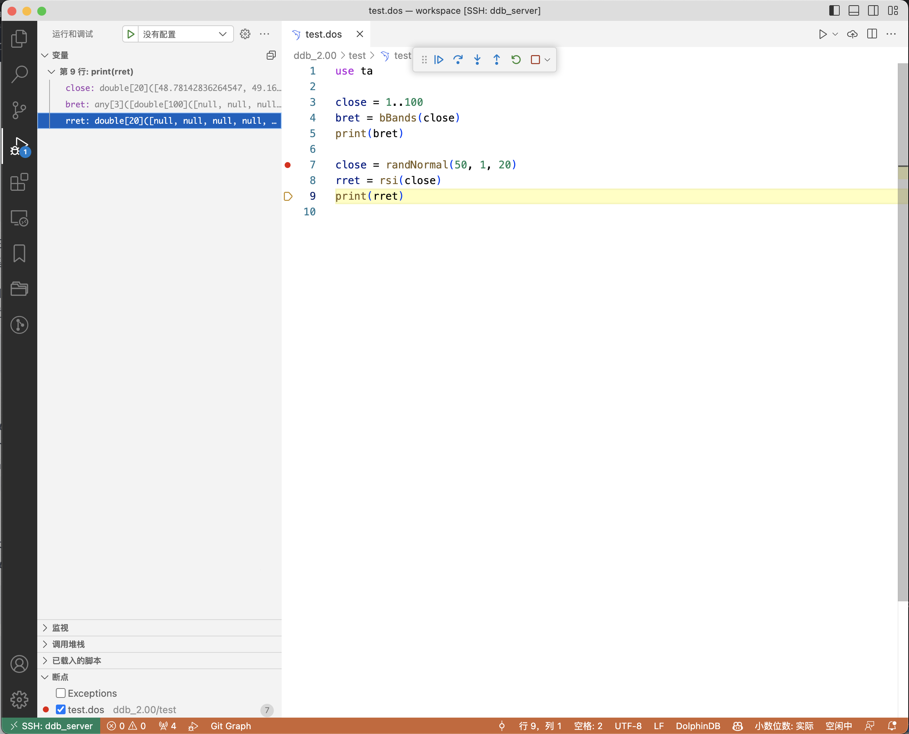
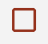
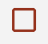

VS Code 插件
VS Code 是微软开发的一款轻便又有极强扩展性的代码编辑器。它提供强大的插件框架，可通过插件支持不同编程语言，达到语法高亮、智能语法提示以及代码运行等效果。
DolphinDB 开发了针对 Dolphin Script 的 VS Code 插件。用户可以通过该插件编写并执行脚本来操作 DolphinDB 数据库，或查看数据库中的数据。该插件具备以下主要功能：
- 代码高亮。
- 关键字、常量、内置函数的代码补全。
- 内置函数的文档提示、参数提示。
- 终端可以展示代码执行结果以及
print函数输出的消息。 - 在底栏中展示执行状态，点击后可取消作业。
- 在底部面板中以表格的形式展示表格、向量、矩阵等数据结构。
- 在侧边面板中管理多个数据库连接，展示数据库表及会话变量。
- 在浏览器弹窗中显示表格、向量、矩阵等数据结构。
- 支持从 DolphinDB 导出表数据到磁盘（.csv 格式 文件）。
使用方法
- 成功安装插件后，在 VS Code 编辑器的活动栏（Activity Bar）中会显示一个表示
DolphinDB 数据库管理面板的图标。点击该图标可以在左侧边栏中看到 DolphinDB 面板，包含连接、数据库、变量管理三个子面板。
图 2. 连接管理 
-
点击右上角的
settings按钮。 -
在
settings.json配置文件中编辑dolphindb.connections配置项。-
name和url属性是必填的 (不同的连接对象必须有不同的name), 默认自动登录 admin 账号 ("autologin": true)。将光标移动到属性上可以查看对应属性的说明。 dolphindb.connections配置项是一个对象数组，默认有四个连接配置，可按情况修改或增加连接对象。
-
-
点击 VS Code 编辑器右下角状态栏的语言选择按钮，如下图
图 3. 语言选择 
-
在语言选择弹框中输入
dolphindb, 按回车键将当前文件关联的语言切换为 DolphinDB 语言。图 4. 语言切换 
- 如果脚本文件名是
.dos后缀 (DolphinDB Script 的缩写)，插件会自动识别为 DolphinDB 语言，自动启用语法高亮及代码补全、提示 - 如果脚本文件名不是
.dos后缀, 比如.txt后缀，则需要手动关联 DolphinDB 语言，方法如下：
执行代码
在打开的 DolphinDB 脚本文件中，按快捷键 Ctrl + E 将代码发送到 DolphinDB Server 执行。第一次执行代码时会自动连接到 DOLPHINDB 区域中选中的连接。
- 如果当前有选中的代码，会将选中的代码发送至 DolphinDB Server 执行
- 如果当前无选中的代码，会将当前光标所在的行发送至 DolphinDB Server 执行
执行代码后，VS Code 编辑器下方的终端内会有基于文本的输出，如果执行的代码最后一条语句返回了表格、数组、矩阵，则会自动切换到 VS Code 编辑器下方面板的 DolphinDB 区域中以表格的形式展示表格、向量、矩阵等数据结构。
查看变量
- 切换执行代码所用的连接 (原有连接不会断开)
- 点击连接右侧的按钮手动断开连接
- 查看会话变量的值
- 非 scalar, pair 类型的变量右侧有两个图标
- 点击左边的图标，在编辑器下方面板的 DolphinDB 区域中查看变量
- 点击右边的图标，在浏览器弹窗中查看变量 (需要配置浏览器允许弹窗,
见后文)。弹窗功能需要浏览器中有一个打开的
DolphinDB Data Browser标签页 (URL 可能是 http://localhost:8321/)，如果缺少这个标签页，插件会先自动打开这个页面：
如下图所示：


查看函数
在 VS Code 编辑器中输入 DolphinDB 内置函数时，点击函数右侧的箭头可以展开函数的文档：

函数输入完成后，将鼠标悬浮于函数名称上，也可查看函数文档。
"editor.tokenColorCustomizations": { "textMateRules": [ // function: bold { "scope": "entity.name.function", "settings": { "fontStyle": "bold" }}, { "scope": "support.function", "settings": { "fontStyle": "bold" }} , ] },
上传文件
用户可以通过 DolphinDB 的 VS Code 插件以下述两种方式上传文件：
- 在 VS Code 的资源管理器中选中需要上传的文件并右击，在右键菜单中选择 DolphinDB: 上传到服务。
- 打开需要上传的文件后，在 VS Code 界面的右上角单击上传按钮。之后，需要用户输入上传到 server 的文件路径（不能为空）。回车后，等待提示 文件成功上传 即可。
此外，用户可以通过配置 dolphindb.connections 的
mappings 属性来自定义本地路径和 server 路径的映射关系，方便插件在后续文件上传过程根据 mappings 映射
server 路径。在 VS Code 设置界面，选中扩展下的 DolphinDB，打开 setting.json 文件，在需要配置的
connection 中添加或修改 mappings中的键值对 ，左侧 "键" 为本地地址，右侧 "值" 为服务器地址。

添加完成后，插件会根据当前连接中用户配置的 mappings 对路径进行映射。
例如，用户当前连接中配置的 mappings 为：
{
"/path/to/local/": "/path/at/remote/",
"/path/to/local/dir1/": "/data/server/dir1/",
"D:/path/to/local/": "/data/server/",
"default": "/data/server/"
}
文件上传时路径映射的规则如下：
- 以自动的方式进行映射，
key代表本地路径，value代表 server 路径，配置完成后，会选择最长匹配项作为上传路径。例如，用户上传的文件路径为 /path/to/local/dir1/file.dos ，此时，同时存在 /path/to/local/ 和 /path/to/local/dir1/ 均可匹配用户路径，但以最长匹配项 /path/to/local/dir1/ 优先匹配。 - 可配置
defalut字段作为默认匹配。如果当前路径没有匹配dolphindb.mappings中的其余项，则以default对应的 server 路径作为上传路径。例如，用户上传的文件路径为 /user/dosuments/file.dos，此时匹配不到mappings的其余项，则以default字段映射的 server 路径作为上传路径，即 /data/server/file.dos。 - 若
dolphindb.mappings中没有匹配项，则以getHomeDir()+/uploads/+文件名作为上传路径。
导出文件
注意，该功能要求 server 版本不小于 2.00.11。导出步骤如下：
- 运行需要保存的表，使其展示在数据视图中。
- 点击数据视图左上角的“DolphinDB：导出表格”的图标。
- 选择保存路径，编辑文件的名称后，点击保存按钮，将表数据保存至指定路径。此时在右下角会显示“文件成功导出到 xxxx”。
调试脚本
DolphinDB 的 VS Code 插件可用于调试用户脚本，用户可以使用实时追踪运行脚本、显示中间变量的值以及展示函数调用栈信息等功能，从而写出更快更好的脚本。
- Python Parse 不支持调试功能。
- 使用调试功能之前，请确保 DolphinDB Server 版本不低于 2.00.10.1 或 1.30.22.1。
具体调试方法如下：

其中，
- Debug Server（DolphinDB Server）：真正执行中断、挂起、数据查询操作的数据库进程
- Debug Adapter：处理两侧的交互信息
- DAP：Debug Adapter Protocol，由 Microsoft 提出的一种通用的 Debug 信息交互协议
- Debug Client：VS Code 调试界面，主要负责与用户交互。下图是该界面的主要部件及功能概览：

编写脚本的方法如下：
后续步骤介绍基于以下例子脚本。出于调试目的以及代码可读性，我们建议每行只写一条语句。
use ta
close = 1..20
bret = bBands(close)
print(bret)
close = randNormal(50, 1, 20)
rret = rsi(close)
print(rret)设置断点的方法如下：
-
在选定行左侧空白处单击鼠标左键设置断点。
图 12. 设置断点 
-
为了接下来的调试演示，我们在第 4 行和第 8 行分别设置了断点，设置断点后，编辑器区的左侧空白区域处会出现红色的圆点，表示断点设置成功。
图 13. 断点设置成功 
启动调试的方法如下：
-
在左下角的连接管理面板中选择用于调试的服务器。
图 14. 选择调试服务器  -
在底部状态栏中设置语言模式为
DolphinDB。图 15. 设置语言模式 
-
按 F5 或通过左侧边栏的运行和调试打开主边栏，点击 运行和调试。
图 16. 运行和调试 
启动后的界面如下图所示，
其中，
- 调试界面的左侧是调试信息区，右侧是编辑器区，下方是调试控制台。
- 调试信息区展示变量的值、函数调用栈等信息。
- 编辑器区用黄色的背景标出了将要执行的行。
- 调试控制台用于显示输出信息和异常信息。
调试过程如果无法启动，打开调试控制台，通过错误信息检查排查错误原因。可能的错误原因包括：
-
DolphinDB Server 版本太低会报错
Server sent no subprotocol，调试服务器连接失败，请确保 DolphinDB Server 版本不低于 2.00.10.1 或 1.30.22.1。
调试方法如下：
启动调试后，VS Code 的界面上方会出现如下图所示的调试工具栏：
从左到右的名称及对应的键盘快捷键分别为：
- 继续（F5）
- 逐过程（F10）
- 单步调试（F11）
- 单步跳出（Shift + F11）
- 重启（Ctrl + Shift + F5）
- 停止（Shift + F5）
用于调试的按钮功能和使用方法如下：
-
逐过程（F10）：在上个调试界面中，黄色的背景标出了即将被 Server 执行的第 4 行代码所对应的语句。我们按下 F10，让 Server 程序执行完第 4 行代码。此时的调试界面如下图所示，黄色的背景变成了第 5 行代码所对应的语句。
图 19. 逐过程 
-
继续（F5）：我们可以利用逐过程的方式一条语句一条语句地执行脚本，但是这样做的效率较低。着重关注断点所在的语句有助于提升执行调试效率。在这里，我们关心的是第 8 行代码所对应的语句，按下 F5 后，Server 程序会一直执行到第 8 行代码。此时的调试界面如下图所示，黄色的背景变成了第 8 行代码所对应的语句。
图 20. 继续 -
查看变量：在调试界面的左侧，即调试主边栏中，我们可以在略上方的位置看到变量的值，如下图所示：
图 21. 查看变量 在这里，
close和bret这两个变量因为过长而导致显示不全，我们可以将光标悬浮在变量的值上方，即可看到完整的值。图 22. 变量完整值 
右键点击变量，选择”查看变量“，在数据视图中会展示该变量的详细信息。
图 23. 查看变量 
-
单步调试（F11）：单步调试用于进入函数内部，查看函数内部的执行情况。在上一步，我们运行到了第8行代码，即
rsi函数的调用语句。按下 F11 后，Server程序会进入rsi内。此时对应的调试界面如下图所示，黄色的背景标示程序已经运行到该函数内部，且即将执行第一条语句。图 24. 单步调试  -
查看调用堆栈：我们将目光再次移动到调试主边栏中。在略下方的位置，可以看到当前的函数调用栈，如下图所示。
图 25. 查看调用堆栈 单击调用栈的某一行，就能在上游函数和下游函数之间切换。此时，调试主边栏上方的变量部分也会显示该层函数所对应的变量的值。
- 动态更新断点：在脚本执行的过程中，我们可以动态地更新断点。例如，我们可以在 152 行和 153
行的位置新增两个断点，如下图所示，编辑器区的左侧空白区域处会出现两个红色的圆点，表示断点已经新增成功。
图 26. 动态更新断点 
当然，我们也可以取消断点。例如，我们单击 152 行左侧空白处来删除 152 行对应的断点。如下图所示，编辑器区左侧空白区域处 152 行对应的红色圆点消失，表示 152 行处的断点已经取消成功。
 - 跳出函数：实际过程中，我们经常需要执行完这个函数并返回上层函数。例如，我们点击调试工具栏中的单步跳出按钮
，即可执行完当前函数体的所有内容并返回到上一层函数。此时，如下图所示，我们已经返回到
test.dos中的第9行代码所对应的语句，代表执行完第8行对应的rsi函数。图 27. 跳出函数  - 重启以及停止：重启和停止按钮的功能与其名字相符。例如，我们点击调试工具栏中的重启按钮
 ，即可重启调试；相应地，点击停止按钮 ，即可停止调试。
，即可重启调试；相应地，点击停止按钮 ，即可停止调试。
语法解析的方法如下：
调试开始时, DolphinDB 会对代码进行初步检测, 如果代码有语法错误, 不会进入调试状态, 并且调试控制台会输出错误信息。

断点管理的方法如下：
如下图所示，在调试主边栏的下方，可以看到所有断点的信息，包括断点的状态、断点的文件名和文件路径以及行号。值得注意的是右上方有两个按钮，禁用所有断点  以及删除所有断点 。
以及删除所有断点 。
- 点击禁用所有断点
可以暂时关闭所有断点，恢复正常程序的执行；再次点击此按钮或者手动添加新断点时，会自动开启所有断点。
- 点击删除所有断点 可以删除所有断点，包括已经禁用的断点。

多目标调试的方法如下：
在启动一个调试会话的同时, 启动另一个调试会话，VS Code 即可自动切换到多目标模式：
-
各个会话现在在 调用堆栈 视图中显示为顶级元素。
图 30. 调用堆栈 
-
调试工具栏显示当前活动的会话（所有其他会话在下拉菜单中可用）。
图 31. 会话列表 
- 调试操作（例如, 调试工具栏中的所有操作）在活动会话上执行可以使用调试工具栏中的下拉菜单或在 调用堆栈 视图中选择其他元素来更改活动会话。
以下脚本语法存在使用上的局限性：
functionview能够通过初步语法检查, 但使用此类语法在调试时会出错。- 含有
include语句的脚本调试会报错“Does not support Debug mode when using include”。可以考虑用use替代。 submitJob,remoteRun等远程调用类函数不能跟踪函数栈调用。- 匿名函数、lambda 表达式、闭包的用法。
暂不支持以下调试方法
- 内联断点、条件断点、记录点、监视
- 查看长度较大的变量
图 32. 长度较大变量 
常见问题
- 如果按 Ctrl + E 快捷键无反应：
- 可能是由于未关联 DolphinDB 语言（此时语法高亮也未生效）
- 也可能由于快捷键与其他插件冲突，需要在 VS Code 的 文件 > 首选项 >
键盘快捷方式 (File > Preferences >
Keyboard Shortcuts`) 中自定义快捷键，在搜索框中输入 CTRL+E, 删除和
DolphinDB: 执行代码 （DolphinDB: Execute Code） 冲突的其他插件的快捷键。

- 如果出现执行代码后一直卡在执行中，打开 vscode 顶部的
帮助 (Help)>切换开发人员工具 (DevTools)在弹出的窗口中切换到控制台标签页查看，如果存在如下内容：Webview fatal error: Error: Could not register service workers: InvalidStateError: Failed to register a ServiceWorker: The document is in an invalid state..，则按下面的步骤操作：- 先更新 VS Code 到最新版本。
- 如果还不能解决，尝试下面的方法结束所有的
Code.exe进程，并删除 service worker 缓存：- linux:
pkill code && rm -rf .config/Code/Service\ Worker/{CacheStorage,ScriptCache} - windows:
- 退出 vscode 之后，打开任务管理器，结束所有残留的 vscode 僵尸进程
taskkill /F /IM Code.exe - 在文件管理器中打开
C:/Users/你的用户名/AppData/Roaming/Code/Service Worker/ - 删除
CacheStorage和ScriptCache两个文件夹
- 退出 vscode 之后，打开任务管理器，结束所有残留的 vscode 僵尸进程
- linux:
- 如果操作以上内容后仍存在问题，则重启电脑。参考 https://github.com/microsoft/vscode/issues/125993
-
如果出现执行代码并返回表格后，底部没有自动切换到 DolphinDB 视图的情况，需要重置 DolphinDB 视图的位置，如下图所示
图 33. 
-
如果出现 dataview (数据视图) 面板右键隐藏后无法再次显示，且执行脚本一直卡在执行中的情况，尝试以下方法解决：
- 执行
defs()函数 - 按 CTRL + SHIFT + P 呼出命令面板，搜索 open view
- 点击打开视图
- 搜索数据视图（英文名是 dataview）
- 点击后即可打开。
- 执行
-
VS Code 有大约为
1 GB的内存限制。建议使用limit限制返回记录数；或者将结果赋给某个变量，如a = select * from，后续通过点击侧边栏变量旁边的按钮进行分页懒加载，按需取回单页数据。 - 为了在浏览器中展示表格等数据，每个 VS Code 窗口会启动一个本地 HTTP 服务器，其可用端口范围可以通过
dolphindb.ports配置，默认为8321-8420，鼠标悬浮在 ports 上可查看详细解释。在浏览器中弹窗展示的功能，要求近两年的版本，如 Chrome 100+ 或 Edge 100+ 或 Firefox 100+ - 若连接数据库时出现报错无法连接的报错，可参考下图关闭代理：
图 34. 关闭代理 
开发说明
# 安装最新版的 nodejs # https://nodejs.org/en/download/current/ # 安装 pnpm 包管理器 corepack enable corepack prepare pnpm@latest --activate git clone https://github.com/dolphindb/vscode-extension.git cd vscode-extension # 安装项目依赖 pnpm install # 将 .vscode/settings.template.json 复制为 .vscode/settings.json cp .vscode/settings.template.json .vscode/settings.json # 参考 package.json 中的 scripts # 构建开发版本 pnpm run dev # 在 VS Code 中切换到调试面板，启动 ddb.ext 调试任务（需要先禁用或卸载已安装的 dolphindb 插件）